Workshop guide
Build AI code review for GHES, step by step
These are the steps, commands and outputs from our own run on 7 November 2026, with secrets removed. Each module says what it does, why it matters, and how to check it in the Azure portal.
Before you start
You need an Azure subscription where you can create resource groups and role assignments (Owner, or Contributor plus User Access Administrator), quota for about 20 vCPUs across Indonesia Central and Southeast Asia, and access to a chat model in East US. Everything runs from Azure Cloud Shell (Bash); nothing is installed on your laptop.
| Item | What we used | Why |
|---|---|---|
| GitHub Enterprise Server | 3.22.3, 45-day trial license, Azure Marketplace image | The "on-premises" source of truth. Trial requested at enterprise.github.com/trial. |
| Simulated data centre | Indonesia Central, VNet 10.30.0.0/16 | Stands in for the customer's site. Joined to Azure by a site-to-site VPN. |
| Azure landing zone | Southeast Asia, VNet 10.40.0.0/16 | Private AKS (runners), MCP VM, API Management, Key Vault, ACR. |
| Model | Microsoft Foundry, East US, gpt-5.6-terra (Global Standard) | Balanced tier for coding and tool use; its own quota was free in this subscription. |
git clone https://github.com/ibranibeny/contoso-ghes-ai-review-lab.git cd contoso-ghes-ai-review-lab/scripts
~/.ghes-lab and a copy on the private admin workstation; in a fresh session, bash 06-workstation-sync.sh --pull brings it back. Run scripts with bash, as shown, so they work on any mount.Pre-flight checks
Before deploying anything, check that the resource providers are registered, the VM sizes are offered in each region, the GHES image exists in Indonesia Central, and which models you can deploy in East US with the quota you have.
bash 00-preflight.sh
Azure CLI : 2.90.0 Bicep : Bicep CLI version 0.48.1 (cec7951cf6) Provider : Microsoft.Network = Registered Provider : Microsoft.Compute = Registered Provider : Microsoft.ContainerService = Registered Provider : Microsoft.CognitiveServices = Registered Provider : Microsoft.ApiManagement = Registered VM size : Standard_E8s_v5 in indonesiacentral = available VM size : Standard_D4s_v5 in southeastasia = available VM size : Standard_D2s_v5 in southeastasia = available Quota : indonesiacentral ESv5 family 0/100 vCPU used/limit Quota : southeastasia DSv5 family 2/100 vCPU used/limit GHES image: GitHub:GitHub-Enterprise:github-enterprise-gen2:3.22.3 Models : (East US, GlobalStandard) gpt-5.4 2026-03-05 GenerallyAvailable gpt-5.5 2026-04-24 GenerallyAvailable gpt-5.6-luna 2026-07-09 GenerallyAvailable gpt-5.6-sol 2026-07-09 GenerallyAvailable gpt-5.6-terra 2026-07-09 GenerallyAvailable Quota : (East US, GlobalStandard tokens-per-minute, in thousands) OpenAI.GlobalStandard.gpt-5 582.0/250.0 OpenAI.GlobalStandard.gpt-5.6-luna 0.0/250.0 OpenAI.GlobalStandard.gpt-5.6-sol 50.0/250.0 OpenAI.GlobalStandard.gpt-5.6-terra 0.0/250.0
gpt-5 quota was already over its limit (582 of 250), but every GPT-5.6 tier has its own quota. We chose gpt-5.6-terra: strong on code and tool calling at a fraction of the flagship's cost (Well-Architected cost pillar). Move up to gpt-5.6-sol only if your own evaluation shows a quality gap.Deploy three regions with Bicep
One subscription-scope Bicep deployment creates three resource groups and everything in them. The script builds the template, runs a full pre-deployment validation, and starts the deployment with --no-wait, so you can close Cloud Shell.
MODEL_NAME=gpt-5.6-terra MODEL_VERSION=2026-07-09 PRESENTER_IP=<your-browser-ip> bash 01-deploy-infra.sh
$ MODEL_NAME=gpt-5.6-terra MODEL_VERSION=2026-07-09 PRESENTER_IP=<your-ip> bash 01-deploy-infra.sh Subscription : ME-MngEnvMCAP708029-benyibrani-1 Deployment : ghes-ai-lab | rg-ghes-onprem-idc (indonesiacentral) | rg-ghes-ai-sea (southeastasia) | rg-ghes-foundry-eus (eastus) Bicep build: OK Succeeded --- deploy (runs in Azure; safe to close Cloud Shell) ---
ghes-ai-lab. Each module (on-prem site, landing zone, Foundry, DNS links, VPN gateways, API Management) shows its own status.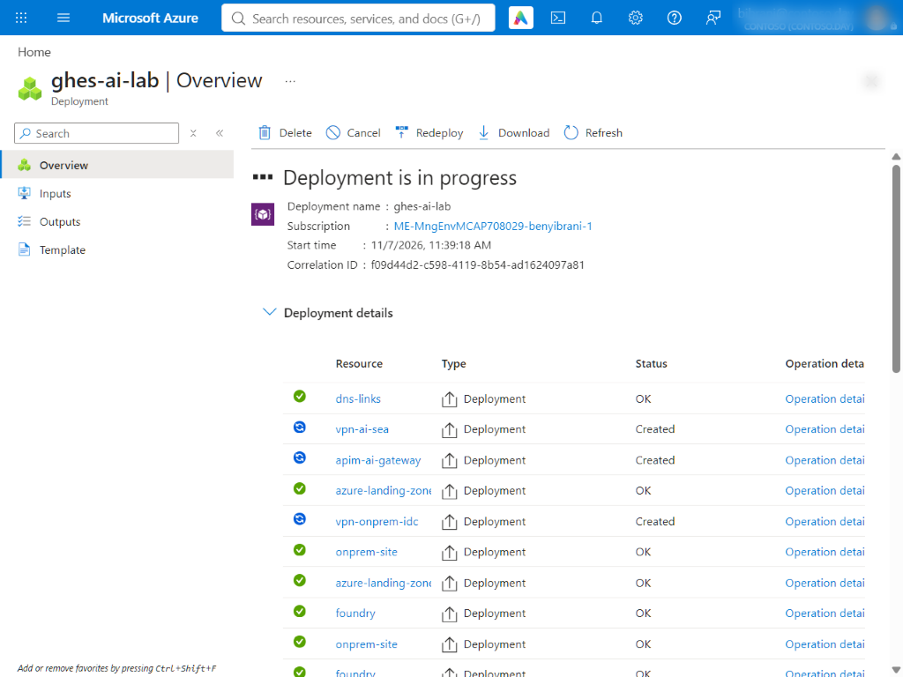
| Module | Creates | Typical time |
|---|---|---|
onprem-site | VNet, NSG allow-list, GHES VM (E8s_v5, 512 GB data disk), Actions storage with private endpoint | 5–8 min |
azure-landing-zone | Private AKS with workload identity, MCP VM, NAT gateway, Key Vault, ACR, identities, private endpoint to Foundry | 10–15 min |
foundry | AI Services account (local auth off), project, model deployment | 2–4 min |
vpn-onprem-idc, vpn-ai-sea | VpnGw1AZ gateways, local network gateways, IKEv2 connections | 30–45 min |
apim-ai-gateway | API Management (Developer, internal VNet) with the AI gateway policy | 30–60 min |
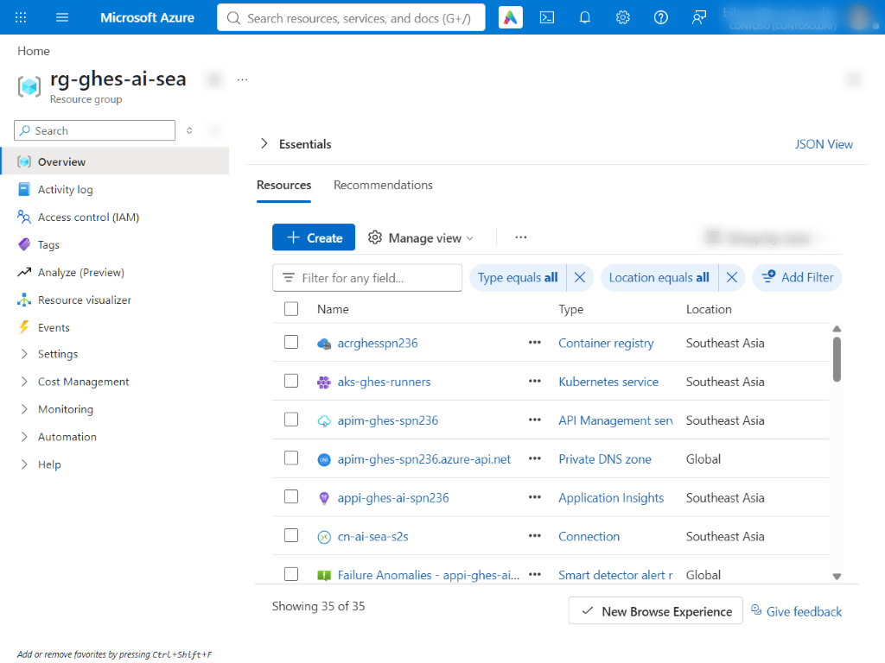
rg-ghes-ai-sea after the deployment: 35 resources, including the container registry, the private AKS cluster, API Management, Application Insights and the VPN connection.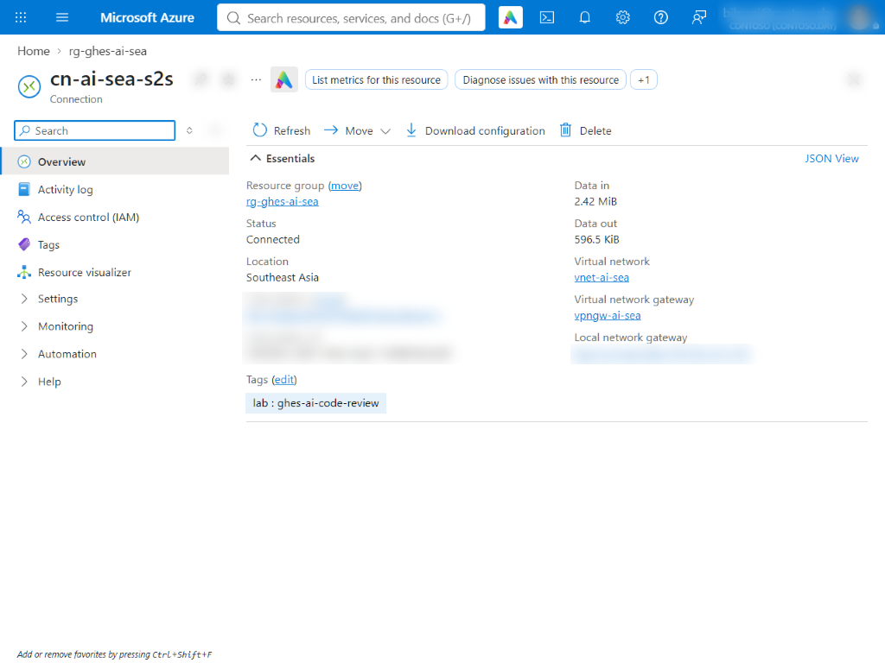
cn-ai-sea-s2s is Connected; traffic is already flowing between the data centre and the landing zone. Subscription details and the peer address are blurred.Get a GHES trial license
Sign in to github.com, open enterprise.github.com/trial, fill in your details and choose Deploy GitHub on Microsoft Azure. You (not a script) accept the GitHub Customer Agreement on behalf of your organisation. The confirmation page offers the license file straight away.
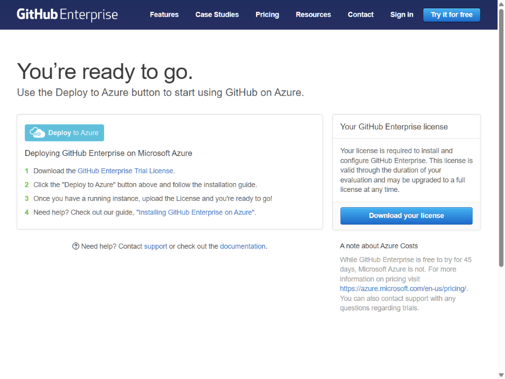
.ghl file. We fetched it directly into Cloud Shell from the same link.curl -sSL -o ~/ghes-trial.ghl '<the Download your license link>' # or upload the file with Manage files > Upload chmod 600 ~/ghes-trial.ghl
-rw------- 1 bibrani bibrani 20161 Nov 7 05:10 /home/bibrani/ghes-trial.ghl GHES host: ghes-contoso-spn236.indonesiacentral.cloudapp.azure.com privateIp: 10.30.1.10 size: Standard_E8s_v5 state: VM running Setup page :8443 -> HTTP 200
Private administration: no inbound ports
Shortly after the deployment, the appliance stopped answering on its management ports. The activity log showed why: a tenant guardrail (an automated identity, not us) had rewritten nsg-ghes and removed the rule that allowed the management console (8443) and administrative SSH (122) from two public IP addresses. Rather than fight the control, we adopted the design it pushes you towards:
- A small admin workstation (
vm-corp-ws01, Ubuntu 24.04) in its own subnet of the data centre network, with no public IP and only the Azure default inbound rules. - Outbound internet for that subnet through a NAT gateway, so the workstation can fetch packages and the lab repository.
- One NSG rule on the appliance: 8443 and 122 are reachable from the workstation subnet only.
- Cloud Shell drives the workstation with Azure Run Command (the Azure control plane), so nobody needs SSH or RDP into it.
bash 05-admin-workstation.sh # NAT gateway, subnet + NSG, VM, cloud-init, then step 06 source lib/ws.sh # ws '<commands>' runs on the workstation as root, in bash
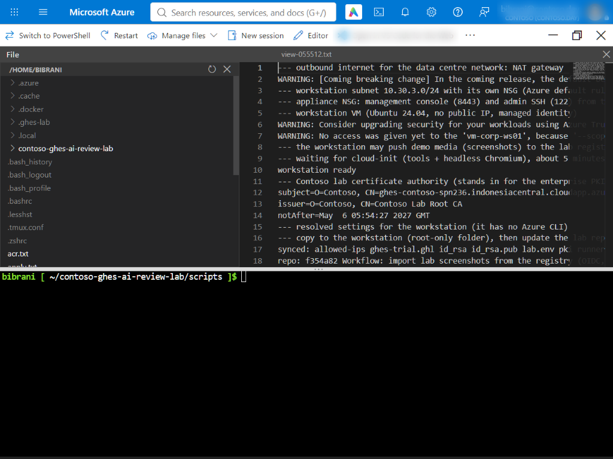
/root/.ghes-lab.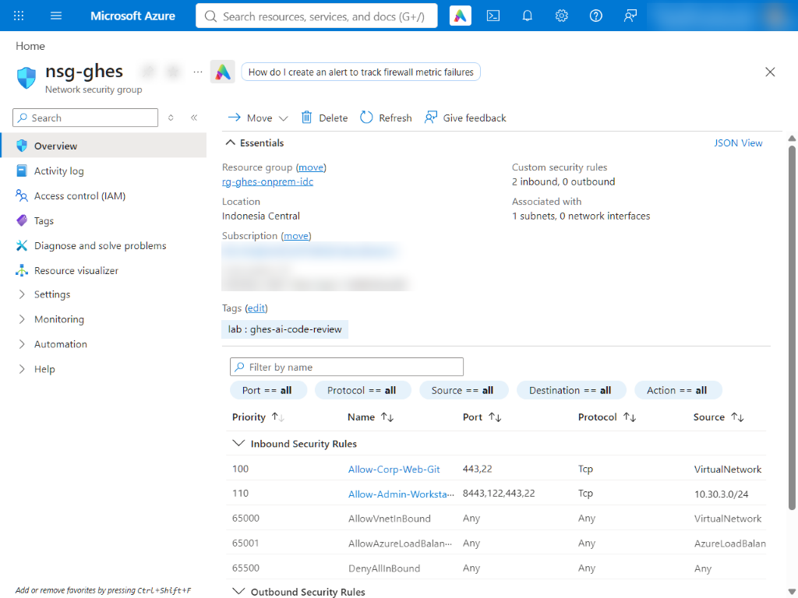
nsg-ghes: web and Git (443, 22) from the virtual networks, administration (8443, 122) from the workstation subnet only. Nothing is open to the internet.Initialise the appliance through its API
Instead of clicking through the setup wizard, the script uses the GHES Management Console API on port 8443: upload the license and set the root site administrator password, set the host name and private mode, register an SSH key for the administrative shell (port 122), then apply the configuration. In our run the first configuration took about 25 minutes.
ws 'bash 10-ghes-init.sh' # from Cloud Shell; step 06 copied the license to the workstation
Allow-list now: <presenter-ip>/32 <cloud-shell-ip>/32 Waiting for the appliance to answer on :8443 ... --- upload license + set root site admin password HTTP 202 --- settings: host name, private mode, no public sign-up HTTP 204 --- administrative SSH key (port 122) [{"hostname":"localhost","message":"SSH key added successfully","modified":true}] HTTP 200 --- apply configuration (10-20 minutes the first time) run_id=895c776e 05:20:12 {"running":true,"successful":false,"nodes":[null]} 05:20:43 {"running":true,"successful":false,"nodes":[null]} ...
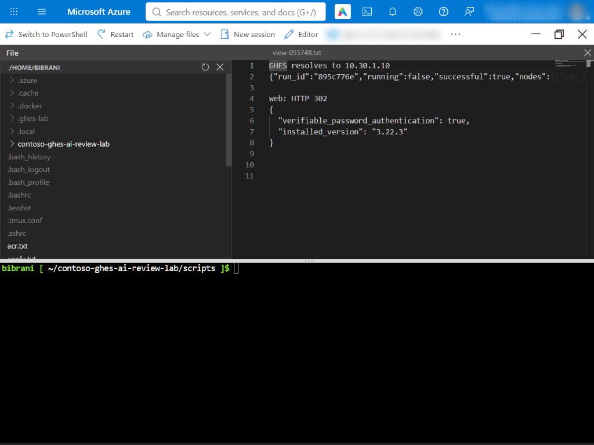
TLS from your PKI, and GitHub Actions
GitHub Actions on GHES needs TLS and external blob storage. With no internet-facing port 80, a public ACME certificate is not an option, and most enterprises use their own PKI anyway. Step 06 created a Contoso lab CA and a certificate for the appliance's host name. Step 11 makes the appliance trust that CA (ghe-ssl-ca-certificate-install), installs the certificate through the Management Console API, tests the Actions storage account through its private endpoint with ghe-actions-precheck, stores the Actions settings and applies everything in one configuration run.
ws 'setsid nohup bash 11-ghes-tls-actions.sh > /var/log/lab-11.log 2>&1 < /dev/null &' ws 'tail /var/log/lab-11.log'
--- appliance reachable from the workstation (private DNS: 10.30.1.10) --- TLS: trust the Contoso lab CA on the appliance, then install the certificate issued by it for ghes-contoso-spn236.indonesiacentral.cloudapp.azure.com settings: HTTP 204 --- GitHub Actions storage: Azure Blob through the private endpoint All Storage tests passed Actions settings stored --- apply (TLS + Actions) run_id=1727b03c 06:19:39 {"running":true,"successful":false} ... Artifactcache nomad job is healthy! Artifactcache AT health api is healthy! STEP 11 DONE
NODE_EXTRA_CA_CERTS, SSL_CERT_FILE, REQUESTS_CA_BUNDLE), the ARC listener (githubServerTLS) and GitHub's MCP server (the host bundle mounted read-only). Steps 20, 21 and 30 handle each one.First administrator and automation token
GHES has no API for the very first user, so step 12 drives the web UI from the workstation with headless Chromium (Playwright): it creates the first site administrator, signs in, and creates a personal access token (classic) for the lab automation with the repo, workflow, admin:org and site_admin scopes. The token stays in /root/.ghes-lab on the workstation.
ws '/opt/lab/venv/bin/python 12-first-admin.py'
first administrator created: ibranibeny
signed in -> https://ghes-contoso-spn236.indonesiacentral.cloudapp.azure.com/
screenshot 12-02-ghes-dashboard
screenshot 12-03-token-scopes
token saved to /root/.ghes-lab/ghes-token ( ghp_... )
STEP 12 DONE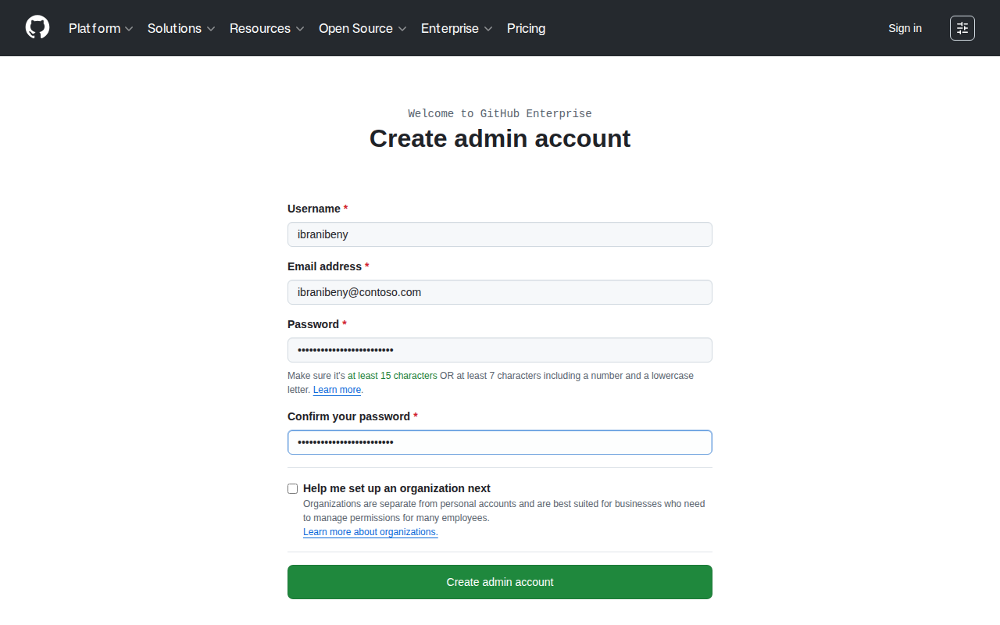
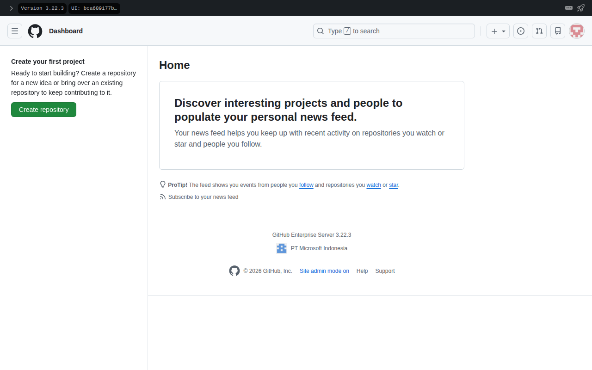
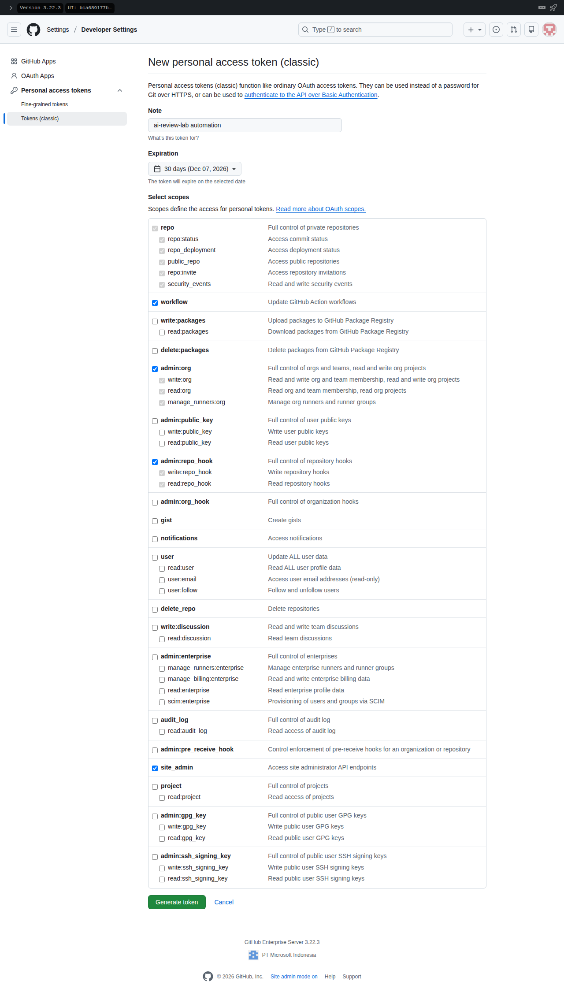
Organisation, repository and guardrails
The script creates the contoso organisation and the contoso-orders-api repository, pushes the sample service with its two workflows, stores the AI settings as organisation variables (nothing here is secret) and protects main so that the ai-review/foundry status and one human approval are required.
ws 'bash 13-ghes-bootstrap.sh'
--- organisation contoso
{"login":"contoso","url":"https://ghes-contoso-spn236.indonesiacentral.cloudapp.azure.com/api/v3/orgs/contoso"}
--- repository contoso/contoso-orders-api
{"full_name":"contoso/contoso-orders-api","private":true}
--- push the sample app
pushed main
--- organisation Actions variables (non-secret configuration)
AI_ENDPOINT = https://apim-ghes-spn236.azure-api.net/openai/v1
MODEL_DEPLOYMENT = gpt-review
MCP_GITHUB_URL = http://mcp.lab.contoso.com:8082/mcp
MCP_STANDARDS_URL = http://mcp.lab.contoso.com:8080/mcp
REASONING_EFFORT = medium
--- branch protection on main: AI review status required, 1 human approval
{"checks":["ai-review/foundry"],"reviews":1}
Repository: https://ghes-contoso-spn236.indonesiacentral.cloudapp.azure.com/contoso/contoso-orders-api
STEP 13 DONE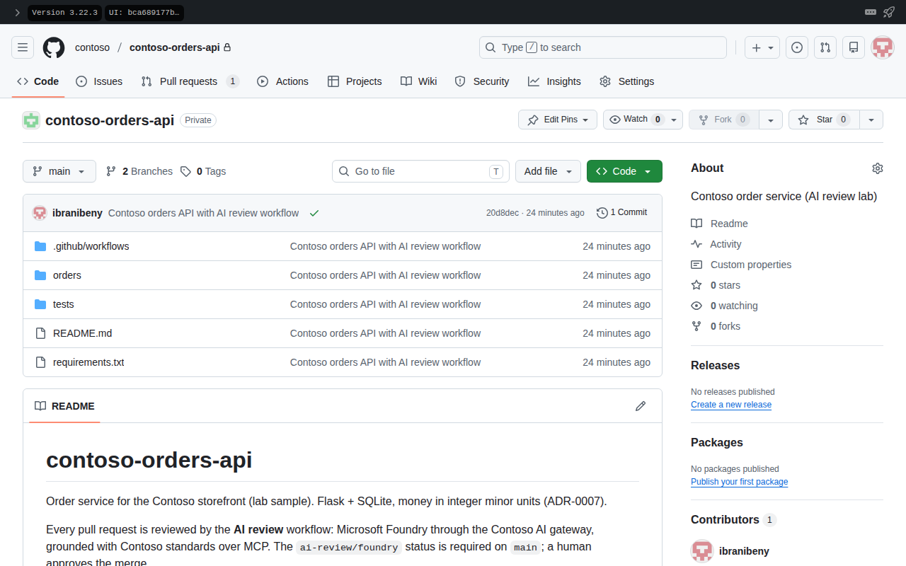
contoso/contoso-orders-api repository on GHES, with the two workflows.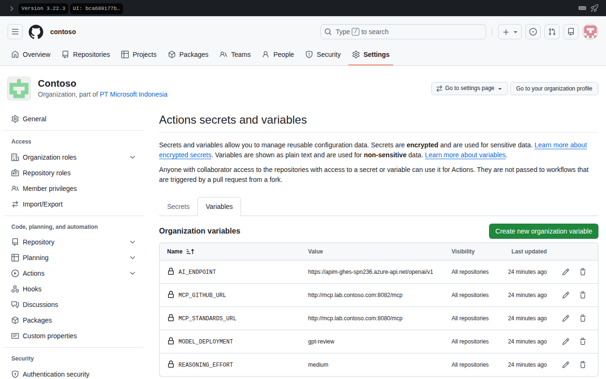
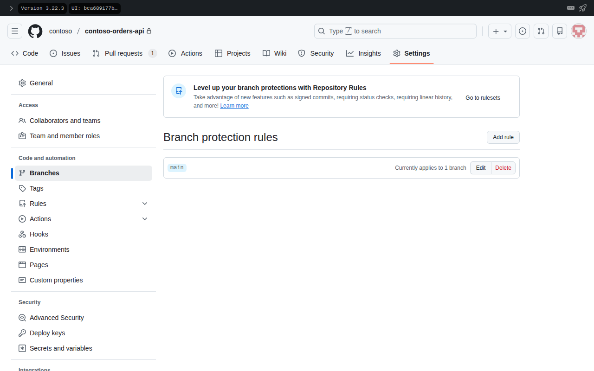
main: the ai-review/foundry status and one approval are required.Private runners with workload identity
The review job runs on Actions Runner Controller in a private AKS cluster. The runner image bakes in the reviewer, its pinned dependencies and the Contoso CA, so jobs download nothing at run time. Each runner pod carries the azure.workload.identity/use label and a service account federated to the id-ghes-reviewer managed identity: that is how it gets Entra ID tokens without a secret.
bash 20-runner-image.sh # az acr build: no Docker needed in Cloud Shell bash 21-arc-install.sh # az aks command invoke: the API server stays private
$ bash 20-runner-image.sh
WARNING: Sending context (7.063 KiB) to registry: acrghesspn236...
WARNING: Queued a build with ID: cm1
acrghesspn236.azurecr.io/ghes-ai-reviewer-runner:202611070600
202611070600
latestRelease "ai-review-runners" does not exist. Installing it now. Pulled: ghcr.io/actions/actions-runner-controller-charts/gha-runner-scale-set:0.15.1 NAME: ai-review-runners LAST DEPLOYED: Sat Nov 7 06:34:24 2026 NAMESPACE: arc-runners STATUS: deployed REVISION: 1 NAME READY STATUS RESTARTS AGE IP NODE ai-review-runners-6b8f66f9-listener 1/1 Running 0 56s 10.244.1.93 aks-system-27995657-vmss000000 arc-gha-rs-controller-d6d787688-ddsrq 1/1 Running 0 68s 10.244.0.237 aks-system-27995657-vmss000001 NAME READY STATUS RESTARTS AGE IP NODE ai-review-runners-runner-ksxq2 1/1 Running 0 33s 10.244.1.185 aks-system-27995657-vmss000000 --- runners registered on GHES (checked from the admin workstation) {"name":"ai-review-runners-runner-ksxq2","status":"online","labels":[]}
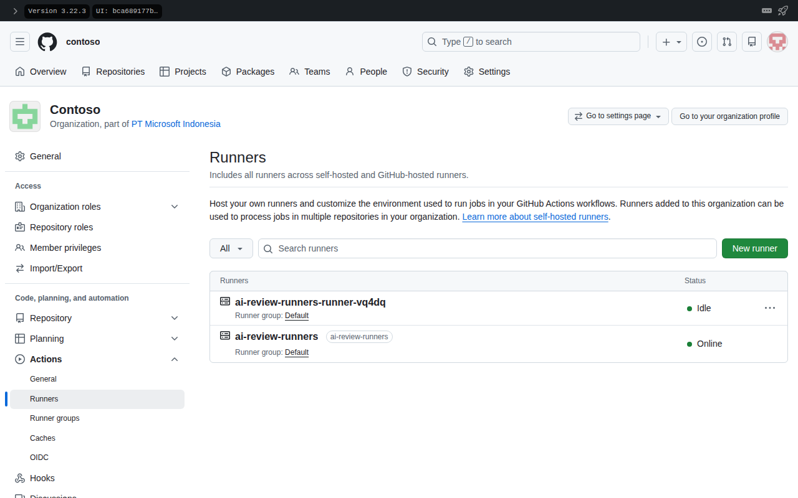
ai-review-runners scale set from AKS is online.External MCP servers
The MCP VM runs two servers with Docker Compose and has no public IP. Its NSG only accepts traffic from the runner subnet.
GitHub's official MCP server
HTTP mode, --read-only, toolsets repos,pull_requests, pointed at GHES with GITHUB_HOST. It holds no credentials: every call carries the job's short-lived token.
Contoso engineering standards
A small FastMCP server exposing search_guidelines, get_standard and get_review_checklist over the secure coding guide, API guidelines and ADRs (16 rules in 5 documents), so comments cite real rule IDs.
bash 30-mcp-check.sh
lab CA trusted
SERVICE STATE PORTS
github-mcp running 0.0.0.0:8082->8082/tcp, [::]:8082->8082/tcp
standards-mcp running 0.0.0.0:8080->8080/tcp, [::]:8080->8080/tcp
{"status":"ok","rules":16,"documents":5}
GHES resolves to: 10.30.1.10
GHES over VPN: HTTP 200 in 0.086561sThe AI gateway and the model
Runners never call Foundry directly. They call API Management on a private IP; the gateway validates the caller's Entra ID token, enforces a per-repository token budget and emits token metrics, then forwards to Foundry with its own managed identity over Private Link.
<validate-azure-ad-token tenant-id="{tenant}">
<client-application-ids><application-id>{reviewer identity client id}</application-id></client-application-ids>
<audiences><audience>https://cognitiveservices.azure.com</audience></audiences>
</validate-azure-ad-token>
<llm-token-limit counter-key="@(context.Request.Headers.GetValueOrDefault("x-repo"))"
tokens-per-minute="100000" token-quota="5000000" token-quota-period="Monthly" />
<llm-emit-token-metric namespace="ai-review"><dimension name="Repo" value="..." /></llm-emit-token-metric>
<authentication-managed-identity resource="https://cognitiveservices.azure.com" />
<set-backend-service backend-id="foundry-review" />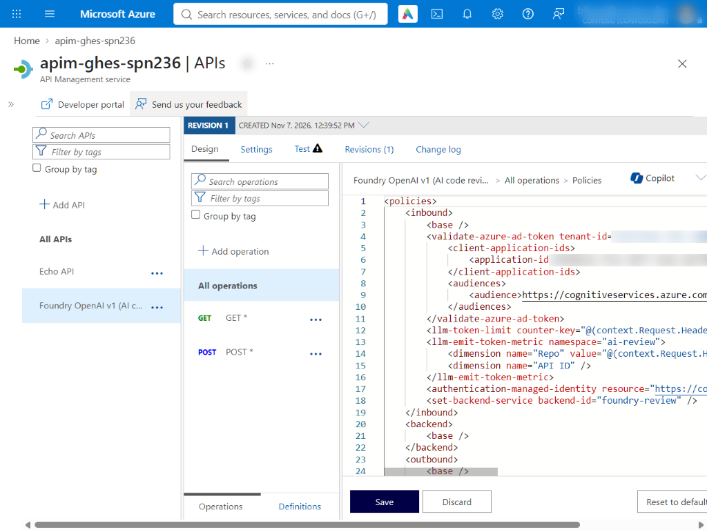
[ai-review 06:38:46] PR #1 'Add year-end discount codes': 2 files, 2303 diff chars, model deployment 'gpt-review'
[ai-review 06:38:46] MCP github: http://mcp.lab.contoso.com:8082/mcp -> 16 tools
[ai-review 06:38:46] MCP standards: http://mcp.lab.contoso.com:8080/mcp -> 4 tools
[ai-review 06:38:55] FAILED: BadRequestError: Error code: 400 - {'error': {'message': "Function tools with reasoning_effort are not supported for gpt-review in /v1/chat/completions. To use function tools, use /v1/responses or set reasoning_effort to 'none'.", 'type': 'invalid_request_error', 'param': 'reasoning_effort'}}Run the demo pull request
The demo PR adds discount codes to the order service, with the kinds of problems reviewers catch every day: SQL built with an f-string, a hard-coded token, money calculated with floats, an HTTP call without a timeout, personal data in a log line, an unbounded page size, and a comment that tries to talk the AI reviewer into approving.
ws 'bash 40-demo-pr.sh' # open the pull request and wait for the ai-review/foundry status ws 'bash lib/joblog.sh' # the reviewer's lines from the job log, read through the GHES API
Job is about to start running on the runner: ai-review-runners-runner-6dvvf (organization) [ai-review 06:50:51] PR #1 'Add year-end discount codes': 2 files, 2303 diff chars, model deployment 'gpt-review' [ai-review 06:50:51] MCP github: http://mcp.lab.contoso.com:8082/mcp -> 16 tools [ai-review 06:50:51] MCP standards: http://mcp.lab.contoso.com:8080/mcp -> 4 tools [ai-review 06:50:57] model gather 1: 3 tool calls, 5379 tokens, 3.3s [ai-review 06:50:57] tool standards__search_guidelines({"query": "SQL injection parameterized queries secrets credentials source code hardcoded logging personal data HTTP time"}) -> 1961 chars [ai-review 06:50:57] tool standards__search_guidelines({"query": "reviewer prompt injection untrusted repository content instructions CSG-INJ-05"}) -> 1667 chars [ai-review 06:50:57] tool github__pull_request_read({"owner": "contoso", "repo": "contoso-orders-api", "pullNumber": 1, "method": "get_diff", "perPage": 100}) -> 2239 chars [ai-review 06:50:59] model gather 2: 0 tool calls, 7193 tokens, 1.4s [ai-review 06:51:12] model review: 0 tool calls, 4787 tokens, 13.9s [ai-review 06:51:16] result {"pr": 1, "verdict": "request_changes", "counts": {"critical": 1, "high": 5, "medium": 2, "low": 0}, "rules": ["ADR-0007-1", "API-HTTP-02", "CSG-INJ-05", "CSG-LOG-03", "CSG-SEC-02", "CSG-SQL-01"], "inline": 8, "moved": 0, ...}
Then play the developer: 41-demo-fix.sh pushes a second commit to the same branch that answers every finding (parameterised SQL, the token from the environment, integer money with basis points, timeouts, bounded inputs, unit tests). The workflow runs again on the new head commit and the status should turn green. The demo page walks through both reviews with screenshots.
ws 'bash 41-demo-fix.sh'
Round 1 acfa0ac Add year-end discount codes failure 6 blocking, 8 total findings (1 critical, 5 high, 2 medium) Round 2 a8d8979 Address AI review failure 2 blocking, 5 total findings (2 high, 2 medium, 1 low) Round 3 adad8c5 Address AI review (round 2) failure 1 blocking, 2 total findings (1 high, 1 low) Round 4 e8cf8f5 Address AI review (round 3) success 0 blocking, 1 total finding (1 low) Final review summary: "The new discount flow is generally parameterized, uses integer minor-unit calculations, and bounds pagination. One error-path issue remains for malformed request bodies." 3 model calls · 27517+1821 tokens · 6 MCP tool calls
Screenshots and the narrated video
GHES is private, so the screenshots of its web UI are taken on the workstation with headless Chromium. They travel to this public site without opening anything: the workstation pushes them to the lab container registry as an OCI artifact with its managed identity, and the Import lab media workflow pulls them with GitHub OIDC (workload identity federation, AcrPull) and commits them under docs/. The Demo video workflow narrates the scenes with Azure AI Speech (neural voice, Entra ID, no keys) and assembles the MP4 with ffmpeg.
ws 'bash 42-demo-collect.sh before' # review results as JSON, job log, screenshots (after step 40) ws 'bash 42-demo-collect.sh after' # the same after the fix commit (after step 41) ws 'bash lib/publish-media.sh shots' # push /opt/lab/shots to the registry as lab-media:shots # then run the 'Import lab media' and 'Demo video' workflows in the public repository
Clean up
The VPN gateways, API Management, AKS, the GHES VM and the workstation are billed by the hour. Delete the three resource groups when you are done.
bash 99-cleanup.sh